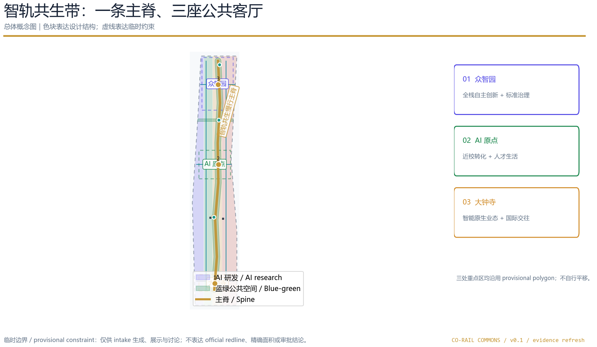
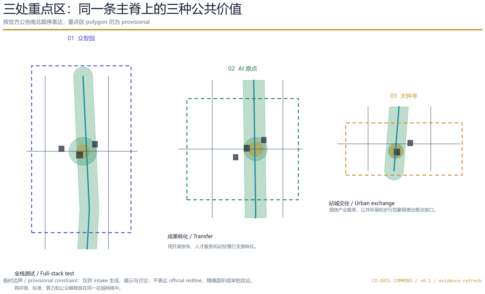
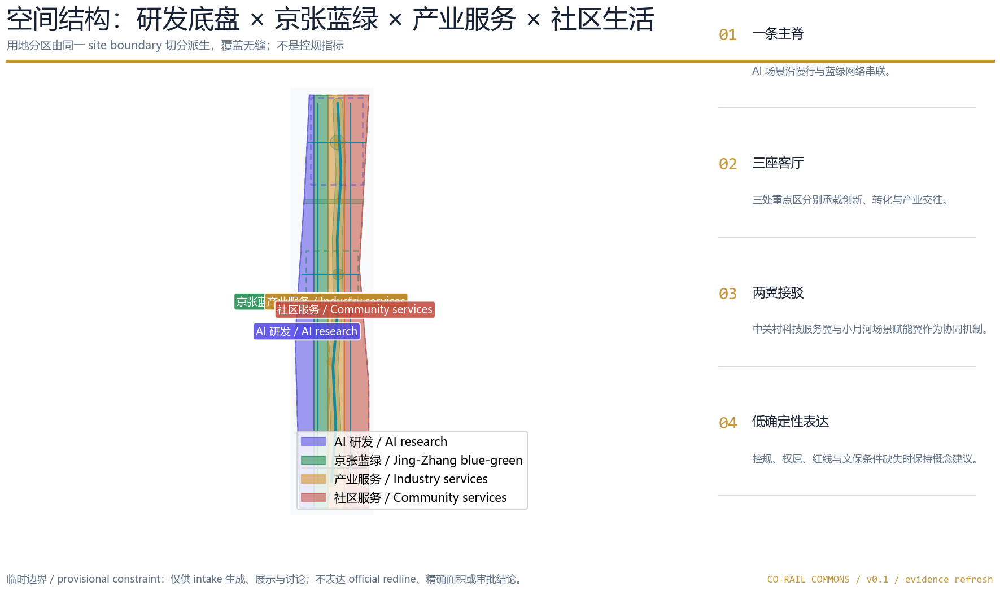
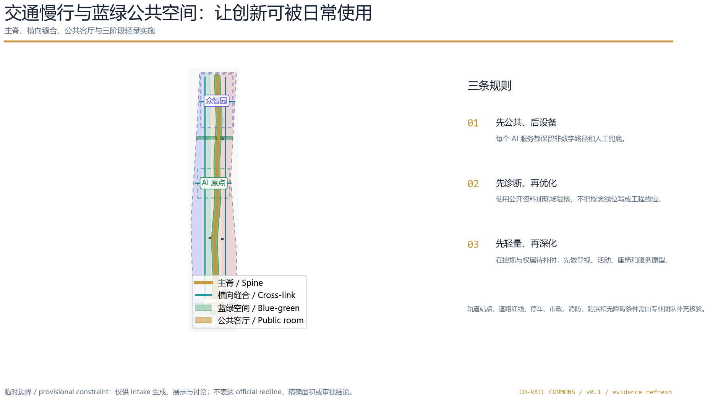
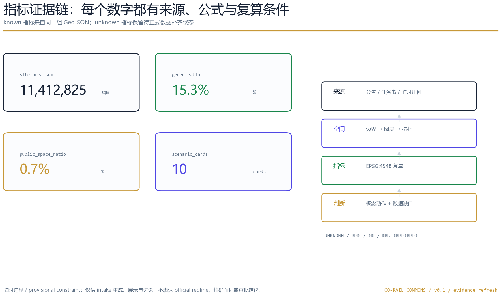

产业生态、人才链、全球案例转化、品牌和未来城市研究。
总览地图
主叙事：历史主轴与 AI 公共创新共同成为日常可走、可用、可复核的城市网络。

三层范围
统筹研究范围 43.6 km² → 总体设计范围 11.4 km² → 三处重点区公告合计 368.4 ha；当前 polygon 仍是临时替代边界。
用地、建筑、交通、市政、蓝绿系统、风貌与更新项目的概念性组合。
众智园、AI 原点、大钟寺三处公共价值不同的城市客厅。
重点区域
三处重点区均包含定位、空间动作、建筑更新、慢行接口、AI 场景和实施依赖；大钟寺站锚定关系按 Issue #1029 作为待核事项。
01
众智园 AI 自主创新加速区
全栈自主创新 + 标准治理
概念建议：功能、空间、交通和运营需由专业团队深化。02
北京 AI 原点社区
近校转化 + 人才生活
概念建议：功能、空间、交通和运营需由专业团队深化。03
大钟寺 AI 产业聚集区
智能原生业态 + 国际交往
位置沿用 provisional polygon；Issue #1029 的大钟寺站锚定关系待官方资料核验。
用地分区
土地分类使用仓库给出的国土空间用地代码；相邻多边形由同一切分过程派生，指标可以从同一组几何复算。

交通慢行与蓝绿公共空间
智轨共生慢行主脊把绿地、公共客厅、轨道接驳和场景节点串在一起；概念道路不等同于道路红线。

建筑与更新项目
12 个建筑基底仅表达保留/改造/新建选址研究的概念落点；没有现状建筑调查、权属和控规条件，不得解释为拆改结论。
优先把现有空间视为可再编程资产，采用首层开放、共享服务和轻量设备的渐进式策略。
新建基底用于表达服务节点和能力接口，容积率、高度、强度和审批条件均保留 unknown。
文化地标和 AI 设施共同遵守待补的文保、消防、无障碍、绿地和蓝线条件。
AI 场景
10 张场景卡；其中 3 个测试验证场景明确“未开展现场测试”，需要在授权前冻结基线、成功/停止条件和人工兜底。
开源发布厅
发布、贡献与小型路演；活动数据只做聚合统计。
城市智能体沙盒
在预约空间中测试交通、服务与运维智能体，人工复核后再复盘。
慢行断点诊断
用公开道路资料与现场人工记录识别断点，不生成审定线位。
人才生活管家
连接住、学、工、游与公共服务，保留人工服务入口。
AI 安全治理廊
展示标准、可信评测与治理案例；不展示私密模型或内部数据。
校企转化客厅
承接成果发布、知识产权、法务与合作会客。
数据要素剧场
解释授权、可审计的数据流转与数字资产议题。
低碳算力驿站
以概念原型解释端侧算力、公共服务和能源协同。
京张记忆线路
把铁路文脉、中关村创新和 AI 新文化串成可步行叙事。
全球 AI 活动周路线
以公共空间为载体组织开发者节、开放日、路演和城市体验。
开源开发者需要发布、协作、测试和社区声誉。
初创团队需要低门槛空间、算力入口和产品试验场。
企业访客需要轨道接驳、展示、商务和招聘场景。
周边居民需要通勤、休闲、社区服务和低扰动更新。
高校师生需要成果转化、跨校协作和日常慢行。
核心指标
核心数值显示必须与 metrics.json 一致；unknown 指标不以数字渲染。
site_area_sqm11,412,825 m²临时几何复算
green_ratio15.3%蓝绿概念网络
public_space_ratio0.7%公共客厅
ai_scenario_card_count10可复核场景卡

任务覆盖
compliance_matrix.json 覆盖公告 1.3、1.4、1.5 与 agent.1-agent.6；standard_matrix.json 和 design_depth_matrix.json 维护专业证据链。
site boundary、key areas、land use、buildings、roads、green space、public space、constraints、phasing 均存在。
三大定位、五大功能、三区两翼、六项 agent 任务、10 场景、5 画像、3 地标和长期运营均在正文展开。
精确 polygon、控规强度、建筑高度、权属、道路红线、市政、消防、文保和现场基线待补；所有空间落地建议均为概念建议。
自检状态
当前状态：本地自检通过后可进入正式评审队列；provisional key-area 警示保留为 minor，不等同于官方专业评分或主办方背书。
PASS / package_state=ready_for_review
PASS / provisional key areas disclosed
PASS / offline local-image-only delivery
来源 & 假设
官方公告、清权任务书、维护者 provisional geometry、专业标准本地快照与仓库来源登记。
OFFICIAL-ANNOUNCEMENTAGENT-TASKBOOKBOUNDARY-SOURCEMOHURDMNR精确 polygon、控规强度、建筑高度、权属、道路红线、市政、消防、文保和现场基线待补；所有空间落地建议均为概念建议。
A-BOUNDARY-001A-KEY003-001A-CONTROLS-001A-BASELINE-001全部图形、几何派生图和 HTML 由本声明 AI agent 生成；没有使用未清权图片、商标、人物肖像或远程资源。本方案是投稿概念，不是批准规划或已建项目。